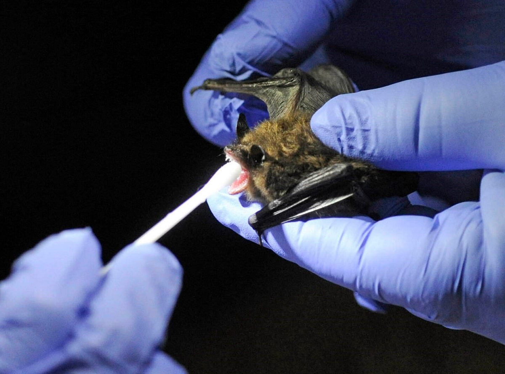

WET MArket: The origin
Until not long ago, the vast majority had never known about the expression "wet market," however the coronavirus pandemic has pushed it into the spotlight. A wet market in Wuhan, China, called the Huanan Seafood Wholesale Market, is accepted to be the wellspring of COVID-19. To some degree likened to rancher's business sectors and found the world over, wet markets are regularly enormous assortments of outside slows down selling new fish, meat, organic products, and vegetables. Some wet markets sell and butcher live creatures on location, including chickens, fish, and shellfish. In China, they're a staple of everyday life for some. Close cooperations with wild creatures have caused various sickness episodes in people, including Ebola and HIV. Purchasing, selling, and butchering wild creatures for food is one way a creature born ailment may contaminate individuals. Infections can spread all the more effectively if creatures in business sectors are wiped out or kept in grimy, squeezed conditions, for example, in stacked pens.
The disclosure commenced a surge of viral sleuthing in natural life, which would at last point to Rhinolophus horseshoe bats in China as the conceivable wellspring of SARS. Worldwide studies would eventually uncover that the precursors and family members of SARS had been coursing in bats across Asia, Africa, and Europe for a considerable length of time. Bats are currently viewed as the first wellspring of all major coronaviruses.  Untamed life reviews led by EcoHealth Alliance in China and somewhere else in Asia demonstrate the most elevated commonness of coronaviruses will in general be expelled by creatures through defecation, or guano on account of bats. Coronaviruses not just spread by means of the air and the respiratory tract yet in addition if the fecal issue interacts with another animal's mouth. Bats aren't actually perfect, so on the off chance that one snack on a natural product, the food may get tainted with fecal issues. On the off chance that the organic product drops to the ground, at that point it can fill in as a viral hybrid point for cultivated creatures like civets.
It's difficult to state what individuals ought to anticipate from the Wuhan coronavirus. In the range of pestilences, SARS fell toward the side of most pessimistic scenario situations, while MERS was deadly yet a lot milder in scope. From the outset, authorities asserted the entirety of the Wuhan coronaviruses included hybrid occasions from creatures, however, now the infection seems, by all accounts, to be spreading from human to human. Chinese authorities affirmed that 14 human services laborers had gotten the infection, and the patient in Washington revealed that he had gone through Wuhan.
How the Wuhan coronavirus made the last bounce into people will likewise stay a secret until China discharges more insights regarding what was housed in the now notorious fish advertise. Authorities shut and slice off access to the market on New Year's Day. However, those pieces of information could assist specialists with distinguishing which creatures may be fit for conveying and spreading the infection both in China and abroad. The Wuhan episode additionally brings up the issue of whether untamed life exchange needs better oversight, or should be covered for acceptable.
"One intercession, which is genuinely straightforward, is simply diminishing the natural life exchange and tidying up the untamed life markets,"
Olival says."Cutting back the natural life exchange has a success win impact of both shielding species that are gathered from the wild and of lessening overflow of new infections."
The conflation of "wet markets" and "untamed life markets" has created turmoil during the coronavirus pandemic, with some U.S. pioneers making open requires the conclusion of wet markets and bludgeoning China for proceeding to permit them. China never requested the conclusion of its wet markets—they're a significant wellspring of reasonable food and work for some. Be that as it may, on January 26, China banned the exchange and utilization of wild creatures for food. As lockdown limitations have facilitated in China, a portion of the nation's other wet markets is purportedly working once more—without wild creatures and wild meat.